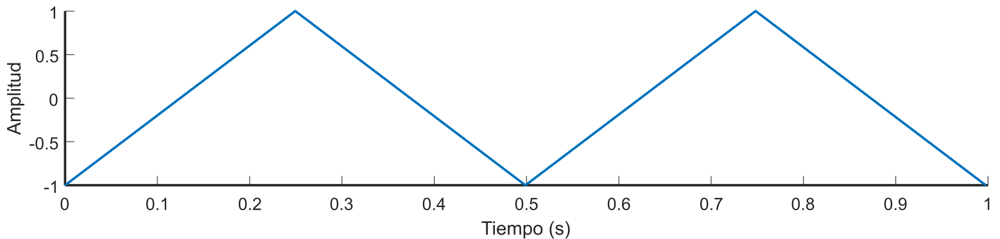
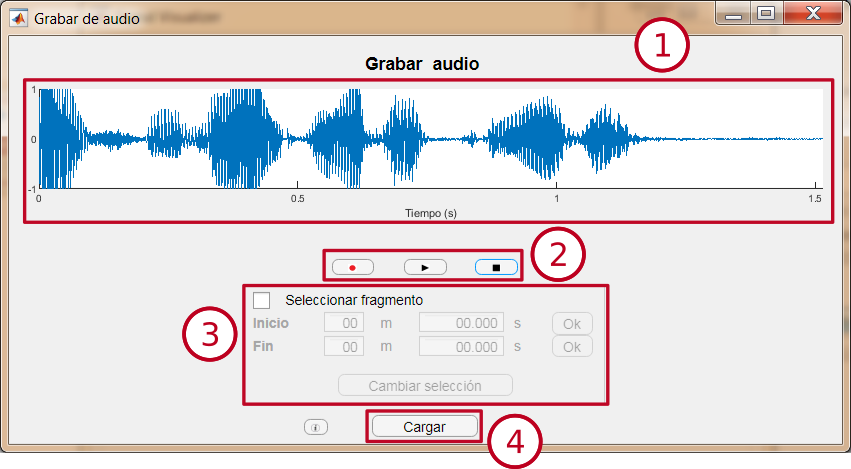

Generar tono puro
Este módulo permite un tono puro de un segundo de duración, con la posibilidad de variar su amplitud, frecuencia y fase.
Interfaz
- Ventana de previsualización: Permite ver la señal que generará el módulo. Se actualiza al cambiar el valor de algún parámetro.
- Selector de amplitud: Permite variar la amplitud del coseno entre 0 y 1. El valor se puede cambiar deslizando el cursor o modificando el valor de la caja de texto.
- Selector de frecuencia: Permite variar la frecuencia del coseno entre 1 y 20000 Hz. El valor se puede cambiar deslizando el cursor o modificando el valor de la caja de texto.
- Selector de fase: Permite variar la fase del coseno entre −π y π radianes. El valor se puede cambiar deslizando el cursor o modificando el valor de la caja de texto.
- Botón "Generar": Abre una nueva ventana de visualización para observar una señal con los parámetros seleccionados, de 1 segundo de duración.
- Expresión: Muestra la expresión matemática de la señal con los parámetros seleccionados. Se actualiza al cambiar el valor de algún parámetro.
Tono puro
Un tono puro es una señal sinusoidal que tiene una única frecuencia. En este módulo se genera utilizando la función coseno, y se expresa mediante la siguiente fórmula:
A cos(2πft + 𝜙),
siendo A la amplitud, f la frecuencia y 𝜙 la fase.
- Amplitud: Valor máximo de la señal.

|
En este ejemplo la amplitud es 0.5. |
- Frecuencia: Número de veces que se repite un ciclo entero de la señal dentro de una unidad de tiempo. Medido en Hercios (Hz) es el número de veces que se repite un ciclo de la señal en 1 segundo.

|
En este ejemplo la frecuencia es 2 Hz. |
- Fase: Desplazamiento del coseno. Se mide en radianes, siendo 2π radianes un ciclo completo de la señal.

|
En este ejemplo la señal está desplazada ¼ de ciclo, por lo que la fase es π/2 rad. |
Síntesis de armónicos
Este módulo permite generar hasta seis tonos puros superpuestos, cada uno de diferente frecuencia y amplitud. El teclado de la parte inferior permite seleccionar una nota para observar sus seis primeros armónicos.
Interfaz
- Ventana de previsualización: Permite ver la señal que generará el módulo. Se actualiza al cambiar el valor de algún parámetro.
- Selector de frecuencia: Permite seleccionar la frecuencia de cada una de las seis componentes. Se puede seleccionar escribiendo en la caja de texto o clicando sobre las flechas.
- Selector de amplitud: Permite seleccionar la amplitud de cada una de las seis componentes. Se puede seleccionar desplazando el cursor.
- Botón "Generar": Abre una nueva ventana de visualización para observar una señal con los parámetros seleccionados, de 1 segundo de duración.
- Octava: Permite seleccionar la octava de las notas del teclado.
- Teclado: Permite seleccionar una nota. Al seleccionar una nota, se le asignará a cada una de las seis componentes las frecuencias de sus seis primeros armónicos, con una amplitud predeterminada.
Armónicos
Los armónicos son tonos puros adicionales que surgen de forma natural al emitir una nota. La frecuencia de cada uno viene determinada por el producto de la frecuencia fundamental (frecuencia de la nota emitida) y un número natural (1, 2, 3, 4...).
En función de la amplitud que tengan cada uno de sus armónicos, el timbre del sonido cambia.
De esta forma, los armónicos de un Do3 (130.813 Hz) son los siguientes:
Orden del armónico | Frecuencia (Hz) | Nota |
1 (Frecuencia fundamental) | 130.813 | Do3 |
2 | 130.813 · 2 = 261,626 | Do4 |
3 | 130.813 · 3 = 392,439 | Sol4 |
4 | 130.813 · 4 = 523,252 | Do5 |
5 | 130.813 · 5 = 654.065 | Mi5 |
6 | 130.813 · 6 = 784,878 | Sol5 |
7 | 130.813 · 7 = 915,691 | Sib5 (desafinado hacia abajo) |
... | ... | ... |
Generar onda cuadrada
Este módulo permite generar una señal de onda cuadrada de un segundo de duración, con la posibilidad de modificar los parámetros de amplitud, frecuencia, fase y ciclo activo.
Interfaz
- Ventana de previsualización: Permite ver la señal que generará el módulo. Se actualiza al cambiar el valor de algún parámetro.
- Selector de amplitud: Permite variar la amplitud de la onda cuadrada entre 0 y 1. El valor se puede cambiar deslizando el cursor o modificando el valor de la caja de texto.
- Selector de frecuencia: Permite variar la frecuencia de la onda cuadrada entre 1 y 20000 Hz. El valor se puede cambiar deslizando el cursor o modificando el valor de la caja de texto.
- Selector de fase: Permite variar la fase de la onda cuadrada entre −π y π radianes. El valor se puede cambiar deslizando el cursor o modificando el valor de la caja de texto.
- Selector de ciclo activo: Permite variar el ciclo activo de la onda cuadrada entre el 10 % y el 90 %.
- Botón "Generar": Abre una nueva ventana de visualización para observar una señal con los parámetros seleccionados, de 1 segundo de duración.
Onda cuadrada
Una onda cuadrada es una onda periódica que se forma mediante transiciones instantáneas entre dos niveles.
Los parámetros configurables son los siguientes:
- Amplitud: Diferencia entre los dos niveles.

|
En este ejemplo la amplitud es 1. |
- Frecuencia: Número de periodos en 1 segundo, medido en Hz. (Para más información, pulsa aquí).
- Fase: Desplazamiento de la señal con respecto a su posición original. (Para más información, pulsa aquí).
- Ciclo activo: Parte del periodo en la que la señal se encuentra en el nivel superior (o nivel activo). En este caso se mide en un porcentaje respecto a la duración total del periodo.
Generar diente de sierra
Este módulo permite generar una señal de diente de sierra de un segundo de duración, con la posibilidad de modificar los parámetros de amplitud, frecuencia, fase y posición del máximo.
Interfaz
- Ventana de previsualización: Permite ver la señal que generará el módulo. Se actualiza al cambiar el valor de algún parámetro.
- Selector de amplitud: Permite variar la amplitud de la señal de diente de sierra entre 0 y 1. El valor se puede cambiar deslizando el cursor o modificando el valor de la caja de texto.
- Selector de frecuencia: Permite variar la frecuencia de la señal de diente de sierra entre 1 y 20000 Hz. El valor se puede cambiar deslizando el cursor o modificando el valor de la caja de texto.
- Selector de fase: Permite variar la fase de la señal de diente de sierra entre −π y π radianes. El valor se puede cambiar deslizando el cursor o modificando el valor de la caja de texto.
- Selector de máximo: Permite variar la posición del máximo entre 0 y 1.
- Botón "Generar": Abre una nueva ventana de visualización para observar una señal con los parámetros seleccionados, de 1 segundo de duración.
Señal de diente de sierra
La señal de diente de sierra es una señal periódica, en la que cada periodo consiste en la unión mediante una línea recta de un punto superior y otro inferior. Como su nombre indica, es similar a los dientes de una sierra.
Los parámetros configurables son los siguientes:
- Amplitud: Valor máximo de la señal.
|
En este ejemplo la amplitud es 1. |
- Frecuencia: Número de periodos en 1 segundo, medido en Hz. (Para más información, pulsa aquí).
- Fase: Desplazamiento de la señal con respecto a su posición original. (Para más información, pulsa aquí).
- Posición del máximo: Situación del máximo dentro del periodo (como referencia, tomando el mínimo como comienzo del periodo). 0 representa el inicio del periodo, y 1 el final.

|
Posición del máximo: 1 |
 |
Posición del máximo: 0.5 |
|
Posición del máximo: 0 |
Generar pulso de Rosenberg
Este módulo permite generar un pulso de Rosenberg de un segundo de duración, con la posibilidad de modificar los parámetros de amplitud, frecuencia, tiempo de subida y tiempo de bajada.
- Ventana de previsualización: Permite ver la señal que generará el módulo. Se actualiza al cambiar el valor de algún parámetro.
- Selector de amplitud: Permite variar la amplitud del pulso de Rosenberg entre 0 y 1. El valor se puede cambiar deslizando el cursor o modificando el valor de la caja de texto.
- Selector de frecuencia: Permite variar la frecuencia del pulso de Rosenberg entre 1 y 20000 Hz. El valor se puede cambiar deslizando el cursor o modificando el valor de la caja de texto.
- Selector de tiempo de subida: Permite cambiar el tiempo de subida, en relación con el tiempo total del ciclo, entre el 10% y el 90%. El valor se puede cambiar deslizando el cursor o modificando el valor de la caja de texto.
- Selector de tiempo de bajada: Permite cambiar el tiempo de bajada, en relación con el tiempo total del ciclo, entre el 10% y el 90%. El valor se puede cambiar deslizando el cursor o modificando el valor de la caja de texto.
- Botón "Generar": Abre una nueva ventana de visualización para observar una señal con los parámetros seleccionados, de 1 segundo de duración.
Pulso de Rosenberg
Es un pulso utilizado en la generación de voz sintética. Con este modelo, se trata de imitar el sonido producido por la glotis al realizar los movimientos de apertura y cierre.
Los parámetros configurables son los siguientes:
- Amplitud: Valor máximo de la señal.
- Frecuencia: Número de periodos en 1 segundo, medido en Hz. (Para más información, pulsa aquí).
- Tiempo de subida: Tiempo que tarda la señal en ascender desde el mínimo hasta el máximo. Representa el tiempo de apertura glotal.
- Tiempo de bajada: Tiempo que tarda la señal en descender desde el máximo hasta el mínimo. Representa el tiempo de cierre glotal.

Generar ruido
Este módulo permite generar diferentes tipos de ruido de un segundo de duración, con la posibilidad de modificar la amplitud máxima.
Interfaz
- Ventana de previsualización: Permite ver la señal que generará el módulo. Se actualiza al cambiar el valor de algún parámetro.
- Selector de tipo de ruido: Permite seleccionar el tipo de ruido generado.
- Selector de amplitud máxima: Permite seleccionar la amplitud máxima del ruido generado.
- Botón “Nueva muestra”: Genera una nueva muestra aleatoria de ruido.
- Botón "Generar": Abre una nueva ventana de visualización para observar una señal con los parámetros seleccionados, de 1 segundo de duración.
Ruido
Se define como ruido una señal formada por muestras cuyo valor es aleatorio.
- Amplitud máxima: Rango numérico dentro del que se encontrarán los valores de la muestra.
Por ejemplo, si se selecciona una amplitud máxima de valor 0.5, el valor de cada muestra será un número aleatorio entre -0.5 y 0.5.
- Tipo de ruido: Existen diferentes tipos de ruido, en función de su densidad de potencia espectral.
- Ruido blanco: Este tipo de ruido tiene una densidad de potencia espectral plana y uniforme a lo largo de todo todo el rango frecuencial. Esto quiere decir que tiene la misma potencia espectral en todas las frecuencias, y que las muestras están incorreladas entre sí. Es decir, el valor de cada muestra es independiente del valor de todas las demás muestras.
- Ruido rosa: La densidad de potencia espectral de este ruido es inversamente proporcional a la frecuencia. Esto quiere decir que este ruido tiene mayor potencia espectral en las frecuencias graves, y menor en las agudas.
- Ruido marrón: Su densidad de potencia espectral es inversamente proporcional a la frecuencia, al igual que ocurre con el ruido rosa. La diferencia con el tipo de ruido anterior es que la potencia espectral en las frecuencias agudas es 0.
Cargar fichero de audio
Este módulo permite cargar un fichero de audio para analizarlo.
Interfaz

- Ventana de previsualización: Permite ver la señal de audio cargada.
- Botón “Abrir fichero”: Permite seleccionar un fichero de audio para cargarlo.
- Botones de reproducción: Permiten iniciar o detener la reproducción del fichero de audio. Si hay un fragmento seleccionado, sólo se reproducirá esta parte.
- Panel de selección de fragmento: Permite seleccionar un fragmento del audio cargado. Para seleccionar el inicio y el final, se deberá escribir el tiempo en el que se situará cada extremo en las cajas habilitadas, o bien haciendo clic sobre la ventana de visualización.
- Panel de información: Muestra información sobre la duración del fichero y su frecuencia de muestreo.
- Botón “Cargar”: Abre una nueva ventana de visualización en la que carga el fichero de audio, o bien el fragmento seleccionado.
Grabar audio
Este módulo permite grabar hasta 60 segundos de audio para analizarlo.
Interfaz

- Ventana de previsualización: Permite ver la señal de audio cargada.
- Botones de reproducción: Permiten iniciar la grabación, iniciar la reproducción, o detener la grabación o la reproducción del fichero de audio. Si hay un fragmento seleccionado, sólo se reproducirá esta parte.
- Panel de selección de fragmento: Permite seleccionar un fragmento del audio cargado. Para seleccionar el inicio y el final, se deberá escribir el tiempo en el que se situará cada extremo en las cajas habilitadas, o bien haciendo clic sobre la ventana de visualización.
- Botón “Cargar”: Abre una nueva ventana de visualización en la que carga el fichero de audio, o bien el fragmento seleccionado.
Ventana de visualización
Esta ventana permite analizar el espectro de la señal elegida mediante diferentes métodos: Transformada de Fourier, Transformada de Fourier de Tiempo Reducido y espectrograma.
Interfaz
Transformada de Fourier
Permite observar la Transformada de Fourier de la señal de audio.
- Vista de la señal: Muestra la señal de audio cargada en la ventana de visualización.
- Botones de reproducción: Permiten controlar la reproducción de la señal de audio.
- El botón de la derecha inicia la reproducción desde el comienzo de la señal.
- El botón del centro inicia la reproducción a partir del cursor colocado haciendo clic sobre la señal.
- El botón de la izquierda detiene la reproducción.
- Exportar imagen: Clicando sobre este botón aparece una lista desplegable con tres opciones.

- El botón superior permite guardar la imagen.
- El botón central copia la imagen como un mapa de bits.
- El botón inferior copia la imagen como una imagen vectorial.
- Panel de navegación de la señal
- Sirven para ampliar y reducir la vista en el eje vertical.
- Sirven para ampliar y reducir la vista en el eje horizontal.
- Restaura la vista original.
- Sirven para desplazarse por la vista.
- Vista de la información espectral: Aquí se puede observar la información espectral de la señal, obtenida mediante el método seleccionado.
- Panel de navegación de la información espectral: Sirve para navegar por la vista de la información espectral. Funciona de la misma forma que el panel de navegación de la señal.
- Selección del modo: Permite seleccionar el método con el que se obtiene la información espectral de la señal.
STFT
Permite observar la Transformada de Fourier de Tiempo Reducido (STFT) de la señal de audio.
- Ventana: Ventana utilizada para calcular la STFT. Se puede cambiar su posición haciendo clic sobre la señal.
- Selector de forma de ventana
- Selector de tamaño de ventana: Permite introducir el tamaño de la ventana en segundos (entre 0.001 y 1).
- Selector de nfft: Permite seleccionar el número de puntos de la transformada entre las opciones disponibles.
Espectrograma
Permite ver el espectrograma de la señal.
STFT + Espectrograma
Permite observar la STFT de la señal y ver su posición en el espectrograma.
Transformada de Fourier
La Transformada de Fourier es una transformación matemática utilizada para transformar señales en el dominio del tiempo (en este caso, la señal de audio) al dominio de la frecuencia. El resultado muestra el contenido frecuencial de la señal. En resumen, es una aproximación a descomponer una señal en una suma de varios tonos puros de diferente frecuencia.
Siendo f(t) una señal en el dominio del tiempo y siendo ω = 2𝜋f. F(ω) es la Transformada de Fourier obtenida.
En este caso, la señal de audio no es una señal contínua, sino que es una señal discreta, es decir, representada por un conjunto de muestras. Así que, realmente, se está realizando una Transformada Discreta de Fourier, que matemáticamente se define así:

Siendo x[n] la señal de audio, con N muestras, y ω = 2𝜋f. X(ω) es la Transformada Discreta de Fourier obtenida.
Transformada de Fourier de Tiempo Reducido (STFT)
Consiste en realizar la Transformada Discreta de Fourier sobre un segmento de la señal, en lugar de sobre la señal completa. Este segmento de la señal se obtiene multiplicando la señal original por una ventana. De esta forma, sólo se tendrán en cuenta las muestras de la señal que queden dentro de la ventana. Los valores de estas muestras se verán modificados por la forma de la ventana (excepto en el caso de la ventana rectangular).
|
|
Ventana rectangular aplicada a una señal |
|
|
Ventana Hanning aplicada a una señal |
Espectrograma
Representación que permite ver el desarrollo frecuencial de la señal de audio a lo largo del tiempo. En el eje horizontal se corresponde con el eje temporal, el eje vertical con el frecuencial, y la variación de la densidad espectral de potencia se representa mediante un degradado de color.
El espectrograma se calcula realizando varios STFT consecutivos, haciendo un barrido con la ventana elegida.